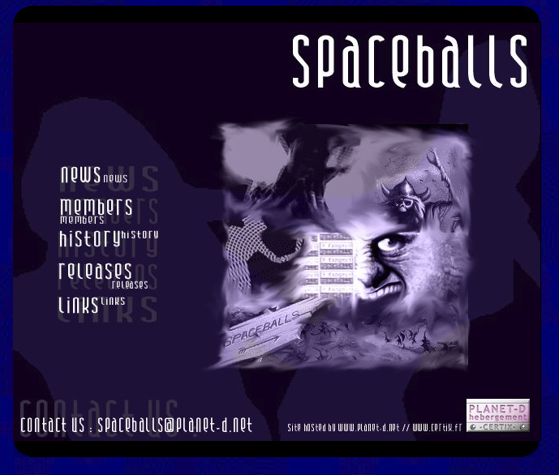
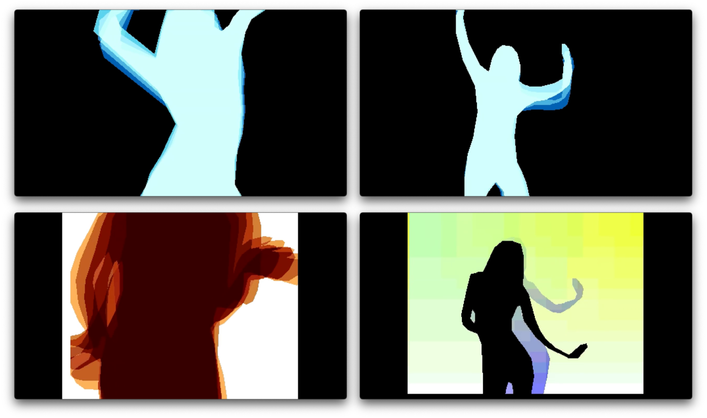
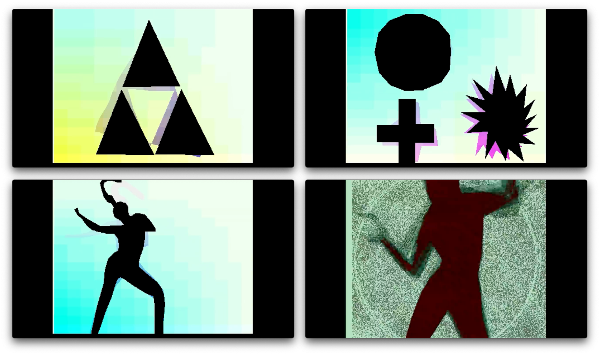
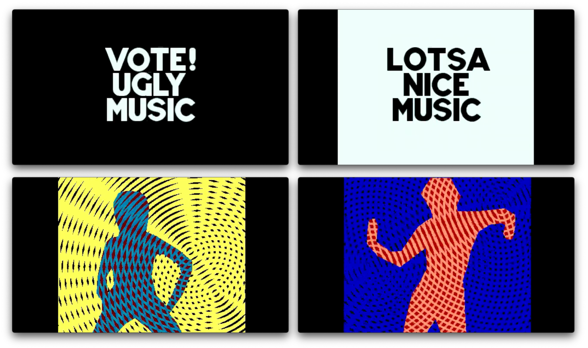
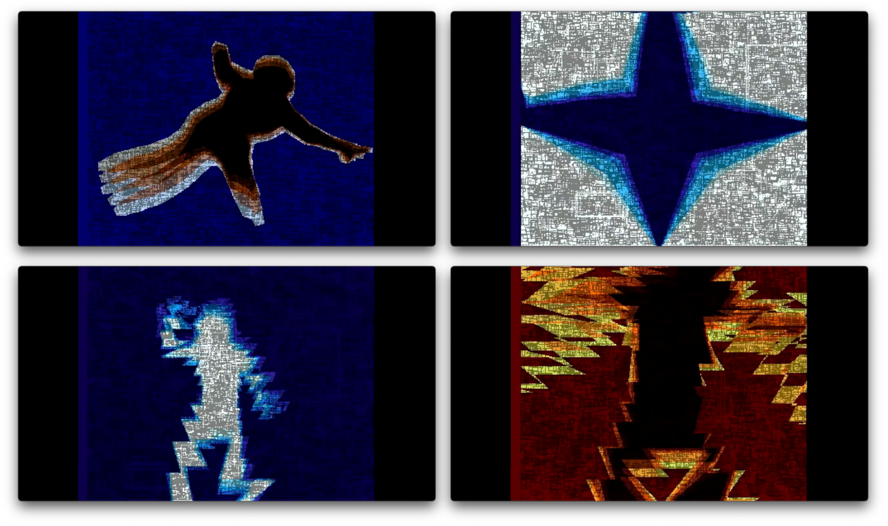
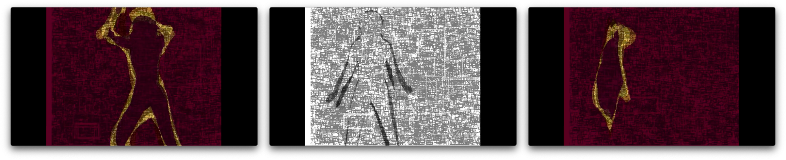
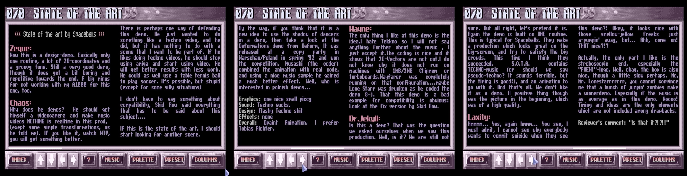
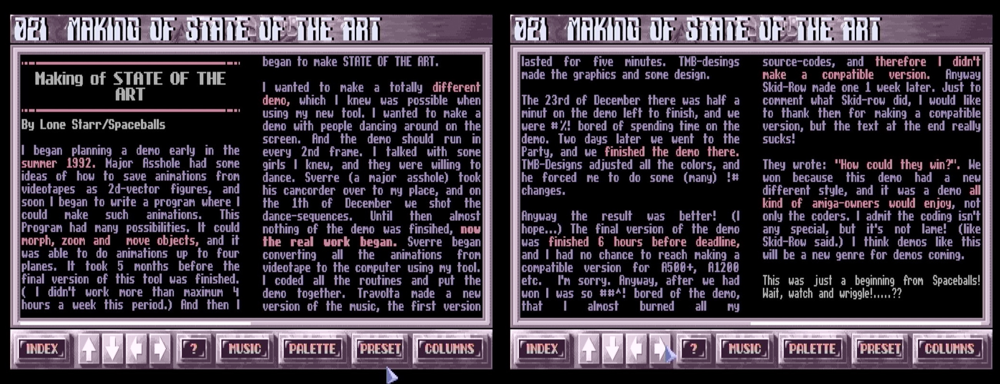
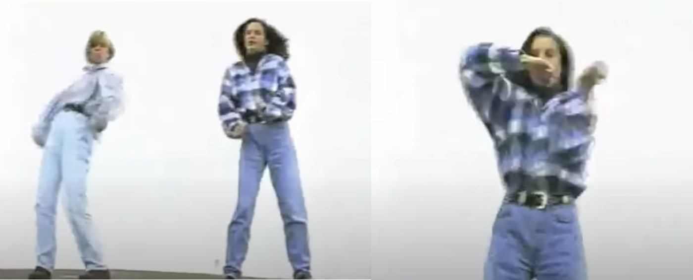

The Demo that Transformed the Amiga into MTV
History and Analysis of State of the Art by Spaceballs
Let's take a detailed look at "State of the Art". A groundbreaking demo for the Commodore Amiga created by the Norwegian demogroup Spaceballs, released in 1992. This demo gained widespread acclaim for its innovative use of real-time 2D vector graphics, animation, and sound, becoming an iconic piece in the history of the Amiga demoscene.
Achtung: Spaceballs-Website
https://spaceballs.untergrund.net/
Und hier ist die Geschichte der Demogruppe: https://spaceballs.untergrund.net/history.html
Und den Namen "Spaceballs" auch erklären: Film von Mel Brooks
Achtung: Text aus einer archivierten Fassung von "It's Art Magazine"
In 1992, a group named the Spaceballs accomplished State of The Art, a demo(nstration) introduced at "The Party 2". This demo of almost four minutes, able to start from a simple density disk, was a major revolution in the art of the demo. For the first time, somebody had succeeded to prove that it was possible to accomplish a video-clip comparable to professional productions, but on a simple personal computer.
It is necessary to remind you of the significance of demo word in this context, which strictly has nothing to do with the word used when speaking about a restricted or evaluated version to a commercial software. The art of demo, such as introduced here, is the capacity to make a real-time calculated program which links visual effects and original music. The art of the demo is a way of demonstrating a programmer, musician, or else graphic designer skills in a same unit of time.
In 1992, Amiga ruled the demo scene, but State Of The Art caused a true earthquake in the demos group community and all its fans. While most part of demos introduced technical parts trying to put forward feats of programming which could be annoying for the non-initiating, State of The Art erased the programming aspect to accomplish a visual assemblage worthy of the best dance video clips from this time ...
Profile
Platform: Commodore Amiga 500
Video Capture:
https://youtu.be/89wq5EoXy-0
Duration: 4 Minutes 12 Seconds
Code: Lone Starr, Major Asshole
Music: Travolta
Graphics: Tmb Design
Released at: "The Party II" (Christmas 1992)
Demo Group Infos:
https://demozoo.org/groups/3/
A video capture of the "State of the Art" demo in all its glory.
When the audience at the demoparty "The Party" in 1992 saw the "State of the Art" demo on the Commodore Amiga, they were blown away. It looked like a freaky, avantgarde music video that would not have been out of place on MTV. The Norwegian demogroup Spaceballs combined real-time 2D vector graphics, animation, and sound in their demo.
The demo features a minimalistic black and white design, which creates a striking visual impact. It is composed of multiple scenes that showcase the technical prowess of a regular Amiga 500 and the artistic capabilities of Spaceballs. It was small enough to be saved on a single 880Kb floppy disk. "State of the Art'' won first place at the "The Party" in 1992.
Demo Analysis
Let's take a closer look at the details of "State of the Art".
1. Demo Intro
The demo starts with the Spaceballs logo, followed by the title "State of the Art" appearing on the screen. The text is presented in a stylized, futuristic font that sets the tone for the rest of the demo.

2. Dancing Silhouettes
The first main scene features silhouettes of dancers in various poses. The dancers are represented by 2D vector graphics, with their movements being smoothly animated. The animation is synchronized to the electronic music track, creating an immersive audiovisual experience.
3. Rotating Objects
This scene showcases rotating 2D objects, such as stars and triangles. The objects morph and change shape as they rotate, demonstrating the capabilities of the Amiga's graphics hardware.
4. Spiraling Patterns
In this scene, the demo displays spiraling patterns that continuously morph and change shape. These intricate patterns are rendered in real-time and are synchronized with the pulsating electronic soundtrack, providing a mesmerizing visual experience.
5. Waveform Visualizer
The demo features a waveform visualizer that responds to the beats and frequencies of the music track. The waveforms are rendered as white lines on a black background, creating a mesmerizing, dynamic effect that adds another layer of depth to the audiovisual experience.
6. Wireframe Cityscape
A 3D wireframe cityscape is presented, with buildings and structures appearing to be drawn in real-time. This showcases the Amiga's ability to render complex 3D scenes.
7. Kaleidoscope
This scene features a kaleidoscope effect, with the screen filled with an ever-changing array of symmetrical patterns. The patterns react to the music, creating a hypnotic and synchronized audiovisual experience.
8. Dancers Reprise as Oulines
The dancers from the earlier scene return, this time with new poses and animations. Their movements continue to be synchronized to the music, further emphasizing the tight integration of visual and auditory elements in the demo.
9. Credits and Greetings
The demo concludes with a credits sequence, acknowledging the individuals responsible for the creation of "State of the Art." The names of the group members and their roles are presented in a stylish font, accompanied by greetings to other demoscene groups and individuals.
The original version of "State of the Art" that was released at the demoparty only ran on an Amiga 500. It crashed on an Amiga 1000 and 1200. So weeks after the release, a demoscener called Skidrow debugged and corrected the demo to make it run on other models of the Amiga.
The good Stuff was no longer locked away in the future
Demo Reviews
When the demo was released, it turned many heads. But there was also criticism. Let's explore the reviews at the time and the ones written decades later.
Zeque:
Now this is a design-demo. Basically only one routine, a lot of 2D-coordinates and a groovy tune. Still a very good demo, though it does get a bit boring and repetitive towards the end. A big minus for not working with my A1000 for this one, too.
Chaos:
Why does he demos? He should get himself a videocamera and make music videos NOTHING is realtime in this prod, (exept some simple transformations, he told me). If you like it, watch MTV, you will get something better.
There is perhaps one way of defending this demo. He just wanted to do something like a techno video, and he did, but it has nothing to do with a scene that i want to be part of. If he likes doing teckno videos, he should stop using amiga and start using video. He will get better results with less work. He could as well use a table tennis ball to play soccer. It's possible, but stupid (except for some silly situations).
I don't have to say something about compatibility, Skid Row said everything that has to be said about this subject....
If this is the state of the art, I should start looking for another scene.
By the way, if you think that it is a new idea to use the shadow of dancers in a demo, then take a look at the Deformations demo from Deform, It was released at a copy party in Warschau/Poland in spring '92 and won the competition. Musashi (the coder) combined the animation with real code, and using a nice music sample he gained a much better effect. Well, who is interested in polnish demos...
Graphics: one nice small piccy
Sound: Techno sucks.
Design: Flashy Techno shit
Effects: none
Overall: Dpaint Animation. I prefer Tobias Richter.
Tobias Richter's Amiga work
https://youtu.be/puspJ1qOkgg?si=TnrJi0XmFH8wje7_
Pouet.net
Demozoo.org
R.A.W Reviews
The History of Spaceballs
Spaceballs' Contribution to the Demoscene
Members of Spaceballs have been active in the demoscene community, participating in and sometimes organizing demoparties and other community events. In the 1990s, Spaceballs not released demos but also the diskmag “R.A.W” (short for “Random Article Writer”).
A diskmag is an electronic magazine distributed on a floppy disk. They are written, edited and distributed by enthusiasts in the scene. Some diskmags are simply text files with some rudimentary diagrams composed of letter characters (ASCII art). Others are complete applications with artful user interfaces, virtual pages with formatted text and graphics. It was good form for many diskmags in the demoscene to start with intros that presented graphics, effects and music. The more elaborate demoscene diskmags had accompanying tracks of new music playing in the background while users read the articles.
This is what Daniel Botz wrote about diskmags in his doctorial thesis "Kunst, Code und Maschine. Die Ästhetik der Computer-Demoszene" (translated by the writer of this piece):
"Since its early days, the scene has had its own publication media such as 'Diskmags', short for 'Disk Magazines', also called Scene Mags or Diskzines. These journalistic products contain information about the founding, dissolution and restructuring of demo groups, reports from demo parties or reviews of new demos. While these products are part of the scene and therefore an object of study, they also serve as important sources of information, for example for dating demos. While the first important scene magazine, 'Illegal' from Germany, was still published on paper, the later Diskmags appeared like demos in disk form and were exchanged and copied in parallel with demos and software." [36]
The demogroup pushed the boundaries of what was possible in demo programming on the Amiga. Their work has influenced many other demoscene groups and individuals, inspiring new techniques and styles. Beyond technical prowess, Spaceballs' demos are known for their distinctive artistic style, often featuring bold colors, innovative graphics, and synchronized music. The music in their demos is an integral part of the experience, often driving the pace and mood of the visuals.
Spaceballs' contribution to the demoscene goes beyond just their technical achievements; they have been a part of shaping the culture and artistic expression within the community, inspiring generations of programmers, artists, and musicians within the demoscene and beyond.
Creating the Demo
Let's take a look at the demo's history, which starts in the past, because the demo was created in the summer of 1992.
The longest section in "Stage of the Art" shows the silhouettes of the female dancers gyrating to the pounding music. The footage was recreated as vector graphics by the members of Spaceballs, who had to manually trace the shapes for each frame of their demo. A tedious process described in "Demoscene: The Amiga Years, Volume 1 1984 - 1993" by Éditions 64K:
"We started to work on the demo for numerous hours, spanning several months. Major Asshole manually drew all the animations by hand, Lone Starr created a specific piece of drawing software for that project. We then used a genlock to display a fixed video image in the background. However, as the sync signal was too bad for the genlock, I used the camera to film the TV set that showed the fixed images to the VHS recorder."
Interview with the Dancer
Source: http://spaceballs.untergrund.net/dancer.html (Interview from RAW issue 5 - May 1993)
The most popular demo in 1992 was State Of The Art.
A techno demo with dancing girls. So who are these dancing girls ?
We got one of the girls and asked her some questions.
Name, Age and Interests ?
My name is Jannicke Selmer-Olsen. I am nearly 17 years old. I dance discojazz/freestyle once a week. The 6 other days I use at playing in a musical called Pleasure Done with the dance group Behind The Mask. If i've ogt time I'm also a girl guide. Paul is also one of my interests.
So why are you in this demonstration from Paul ?
I just showed Paul my legs and he let me dance.....
How long time did you use to records the dancing ?
Since we are so marvelous dancers we only used one hour.
(She won a norwegian championship in disco dancing years back)
Which music did you listen to while recording ?
We listened to the same as in the demo.
Are you a fan of techno music ?
Not really. I am quite fond of Indian music. The cure, DM and so on.
What do you think about the result of the demo ?
Not bad. Paul is a very clever boy.
What do you think about the music in the demo ?
It's alright! But it is a bit fast at the end !
What do you think of Paul ?
A sexy, pretty, strong, clever, kind guy! (Melt...)
(Ed: How can a boy with weight 45 KG and 1.50 high be STRONG!)
Something else to add ?
eh.. Not really! It was fun working with Paul. Bye !
Lone Starr at The Party 2 (december 1992)
You may noticed that the girl was a bit "friendly" to Lone Starr.
Wouldn't you also been that if you got $150 dollar for a hour work. 5% of the winning money went to the Jannicke.
A year later, Spaceballs released another impressive demo called "9 Fingers". This time they asked two of their female friends to dance and filmed them with a video camera. The original footage of the dancing ladies in "9 Fingers" can still be found in the Youtube documentary "Two Women that changed the Amiga Demo scene" https://youtu.be/QZ6419ZuVaE.
The documentary "Two Women that changed the Amiga Demo scene" on Youtube
A Possible Source of Inspiration
Another similar demo on the Amiga called "Deformations" was released in the spring of the same year at the Polish demoparty Warszawa 1992 and was awarded first place. It has a very different nature but also features silhouettes of dancers to sampled music with vocals. ( https://youtu.be/yN3JkL6nhKU?si=6prljJ0ZWVJSHPIh )
Footnote
Genlock is short for "generator locking," a technique used in video production and broadcasting to synchronize the Amiga with multiple video sources, such as cameras or video recorders, with a common reference signal. The genlock signal, also known as a reference signal or sync signal, is used to ensure that all video sources are synchronized to the same frame rate, phase, and color timing.